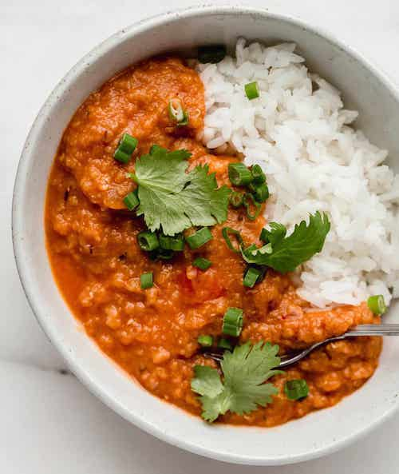

The Curry Recipe

A recipe so good it's lived on many fridges
This curry recipe comes from a long line of fridge recipes, and every time it's made someone usually asks for the recipe.
Serve it with rice, pita bread, toast, whatever!
Ingredients
The main stuff
- 1 cup red lentils (well rinsed and any funny ones taken out)
- 1 small onion, whitish, diced
- 1 can coconut milk
- 1 cup water
- 1 teaspoon cumin
- 1 teaspoon coriander
- 1 teaspoon salt
- 1/4 teaspoon tumeric
- 1 inch ginger
- 1 garlic clove
Garnishes
- Cilantro
- Lime
- Garam Masala
Steps
- Brown onions in a bit of oil
- Add spices, ginger, salt, garlic, and toast them up a bit
- add coconut milk, water, and lentils
- Bring to a boil, then turn to low and cover
- Cook 20ish minutes till it's the texture you like
- Serve up, on rice or naan or whatever
- Garnish to make pretty
Notes
If you decide to double it midway, actually double everything (especially the coconut milk)
as no amount of spices will make up for the lack of that fatty richness.